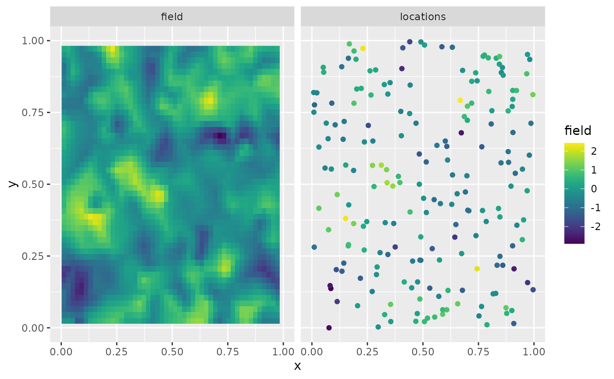

R-INLA implementation of the rational SPDE approach
David Bolin and Alexandre B. Simas
2023-04-25
Source:vignettes/rspde_inla.Rmd
rspde_inla.RmdIntroduction
In this vignette we will present the R-INLA implementation of
the rational SPDE approach. For theoretical details we refer the reader
to the Rational approximation with the
rSPDE package vignette and to Xiong,
Simas, and Bolin (2022).
We begin by providing a step-by-step illustration on how to use our implementation. To this end we will consider a real world data set that consists of precipitation measurements from the Paraná region in Brazil.
After the initial model fitting, we will show how to change some parameters of the model. In the end, we will also provide an example in which we have replicates.
It is important to mention that one can improve the performance by
using the PARDISO solver. Please, go to https://www.pardiso-project.org/r-inla/#license to apply
for a license. Also, use inla.pardiso() for instructions on
how to enable the PARDISO sparse library.
Example with real data
To illustrate our implementation of rSPDE in R-INLA we will consider a
dataset available in R-INLA. This data has
also been used to illustrate the SPDE approach, see for instance the
book Advanced
Spatial Modeling with Stochastic Partial Differential Equations Using R
and INLA and also the vignette Spatial
Statistics using R-INLA and Gaussian Markov random fields. See also
Lindgren, Rue, and Lindström (2011) for
theoretical details on the standard SPDE approach.
The data consist of precipitation measurements from the Paraná region in Brazil and were provided by the Brazilian National Water Agency. The data were collected at 616 gauge stations in Paraná state, south of Brazil, for each day in 2011.
An rSPDE model for precipitation
We will follow the vignette Spatial
Statistics using R-INLA and Gaussian Markov random fields. As
precipitation data are always positive, we will assume it is Gamma
distributed. R-INLA
uses the following parameterization of the Gamma distribution, \[\Gamma(\mu, \phi): \pi (y) =
\frac{1}{\Gamma(\phi)} \left(\frac{\phi}{\mu}\right)^{\phi} y^{\phi - 1}
\exp\left(-\frac{\phi y}{\mu}\right) .\] In this
parameterization, the distribution has expected value \(E(x) = \mu\) and variance \(V(x) = \mu^2/(\phi)\), where\(1/\phi\) is a dispersion parameter.
In this example \(\mu\) will be modeled using a stochastic model that includes both covariates and spatial structure, resulting in the latent Gaussian model for the precipitation measurements \[\begin{align} y_i\mid \mu(s_i), \theta &\sim \Gamma(\mu(s_i),c\phi)\\ \log (\mu(s)) &= \eta(s) = \sum_k f_k(c_k(s))+u(s)\\ \theta &\sim \pi(\theta) \end{align},\]
where \(y_i\) denotes the
measurement taken at location \(s_i\),
\(c_k(s)\) are covariates, \(u(s)\) is a mean-zero Gaussian Matérn
field, and \(\theta\) is a vector
containing all parameters of the model, including smoothness of the
field. That is, by using the rSPDE model we will also be
able to estimate the smoothness of the latent field.
Examining the data
We will be using R-INLA. To install R-INLA go to R-INLA Project.
We begin by loading some libraries we need to get the data and build the plots.
Let us load the data and the border of the region
The data frame contains daily measurements at 616 stations for the year 2011, as well as coordinates and altitude information for the measurement stations. We will not analyze the full spatio-temporal data set, but instead look at the total precipitation in January, which we calculate as
Y <- rowMeans(PRprec[, 3 + 1:31])In the next snippet of code, we extract the coordinates and altitudes and remove the locations with missing values.
Let us build plot the precipitation observations using
ggplot:
ggplot() +
geom_point(aes(
x = coords[, 1], y = coords[, 2],
colour = Y
), size = 2, alpha = 1) +
geom_path(aes(x = PRborder[, 1], y = PRborder[, 2])) +
geom_path(aes(x = PRborder[1034:1078, 1], y = PRborder[
1034:1078,
2
]), colour = "red") +
scale_color_viridis()
The red line in the figure shows the coast line, and we expect the distance to the coast to be a good covariate for precipitation. This covariate is not available, so let us calculate it for each observation location:
Now, let us plot the precipitation as a function of the possible covariates:
Creating the rSPDE model
To use the R-INLA
implementation of the rSPDE model we need to load the
functions:
The rSPDE-INLA implementation is very
reminiscent of R-INLA,
so its usage should be straightforward for R-INLA users. For
instance, to create a rSPDE model, one would use
rspde.matern() in place of
inla.spde2.matern(). To create an index, one should use
rspde.make.index() in place of
inla.spde.make.index(). To create the A
matrix, one should use rspde.make.A() in place of
inla.spde.make.A(), and so on.
The main differences when comparing the arguments between the
rSPDE-INLA implementation and the standard
SPDE implementation in R-INLA, are the
nu and rspde.order arguments, which are
present in rSPDE-INLA implementation. We will
see below how use these arguments.
Mesh
We can use R-INLA
for creating the mesh. Let us create a mesh which is based on a
non-convex hull to avoid adding many small triangles outside the domain
of interest:
prdomain <- inla.nonconvex.hull(coords, -0.03, -0.05, resolution = c(100, 100))
prmesh <- inla.mesh.2d(boundary = prdomain, max.edge = c(0.45, 1), cutoff = 0.2)
plot(prmesh, asp = 1, main = "")
lines(PRborder, col = 3)
points(coords[, 1], coords[, 2], pch = 19, cex = 0.5, col = "red")
The observation matrix
We now create the \(A\) matrix, that
connects the mesh to the observation locations and then create the
rSPDE model.
For this task, as we mentioned earlier, we need to use an
rSPDEspecific function, whose name is very reminiscent to
R-INLA’s standard SPDE
approach, namely rspde.make.A() (in place of R-INLA’s
inla.spde.make.A()). The reason for the need of this
specific function is that the size of the \(A\) matrix depends on the order of the
rational approximation. The details can be found in the introduction of
the Rational approximation with the
rSPDE package vignette.
The default order is 2 for our covariance-based rational
approximation. As mentioned in the introduction of the Rational approximation with the rSPDE
package vignette, an approximation of order 2 in the
covariance-based rational approximation has approximately the same
computational cost as the operator-based rational approximation of order
1.
Recall that the latent process \(u\)
is a solution of \[(\kappa^2
I-\Delta)^{\alpha/2}(\tau u) = \mathcal{W},\] where \(\alpha = \nu + d/2\). We want to estimate
all three parameters \(\tau,\kappa\)
and \(\nu\), which is the default
option of
the rSPDE-INLA implementation. However, there
is also an option to fix the smoothness parameter \(\nu\) to some predefined value and only
estimate \(\tau\) and \(\kappa\). This will be discussed later.
In this first example we will assume we want a rational approximation
of order 2. To this end we can use the rspde.make.A()
function. Since we will assume order 2 and that we want to estimate
smoothness, which are the default options in this function, the required
parameters are simply the mesh and the locations:
Abar <- rspde.make.A(mesh = prmesh, loc = coords)Setting up the rSPDE model
To set up an rSPDEmodel, all we need is the mesh. By
default it will assume that we want to estimate the smoothness parameter
\(\nu\) and to do a covariance-based
rational approximation of order 2.
Later in this vignette we will also see other options for setting up
rSPDE models such as keeping the smoothness parameter fixed
and/or increasing the order of the covariance-based rational
approximation.
Therefore, to set up a model all we have to do is use the
rspde.matern() function:
rspde_model <- rspde.matern(mesh = prmesh)Note that this function is very reminiscent of R-INLA’s
inla.spde2.matern() function. This is a pattern we have
tried to keep consistent in the package: All the rSPDE
versions of some R-INLA function will
either replace inla or inla.spde or
inla.spde2 by rspde.
The inla.stack
Since the covariates are already evaluated at the observation
locations, we only want to apply the \(A\) matrix to the spatial effect and not
the fixed effects. We can use the inla.stack()
function.
The difference, however, is that we need to use the function
rspde.make.index() (in place of the standard
inla.spde.make.index()) to create the index.
If one is using the default options, that is, to estimate the
smoothness parameter \(\nu\) and to do
a rational approximation of order 2, the usage of
rspde.make.index() is identical to the usage of
inla.spde.make.index():
mesh.index <- rspde.make.index(name = "field", mesh = prmesh)We can then create the stack in a standard manner:
stk.dat <- inla.stack(
data = list(y = Y), A = list(Abar, 1), tag = "est",
effects = list(
c(
mesh.index
),
list(
seaDist = inla.group(seaDist),
Intercept = 1
)
)
)Here the observation matrix \(A\) is applied to the spatial effect and the intercept while an identity observation matrix, denoted by \(1\), is applied to the covariates. This means the covariates are unaffected by the observation matrix.
The observation matrices in \(A=list(Abar,1)\) are used to link the
corresponding elements in the effects-list to the observations. Thus in
our model the latent spatial field mesh.index and the
intercept are linked to the log-expectation of the observations,
i.e. \(\eta(s)\), through the \(A\)-matrix. The covariates, on the other
hand, are linked directly to \(\eta(s)\). The stk.dat object
defined above implies the following principal linkage between model
components and observations \[\eta(s) \sim A
x(s) + A \text{ Intercept} + \text{seaDist}.\] \(\eta(s)\) will then be used in the
observation-likelihood, \[y_i\mid
\eta(s_i),\theta \sim \Gamma(\exp(\eta (s_i)), c\phi).\]
Model fitting
We will build a model using the distance to the sea \(x_i\) as a covariate through an improper
CAR(1) model with \(\beta_{ij}=1(i\sim
j)\), which R-INLA calls a random
walk of order 1.
Here -1 is added to remove R’s implicit intercept, which
is replaced by the explicit +Intercept from when we created
the stack.
To fit the model we proceed as in the standard SPDE approach and we
simply call inla().
rspde_fit <- inla(f.s,
family = "Gamma", data = inla.stack.data(stk.dat),
verbose = FALSE,
control.inla = list(int.strategy = "eb"),
control.predictor = list(A = inla.stack.A(stk.dat), compute = TRUE)
)INLA results
We can look at some summaries of the posterior distributions for the parameters, for example the fixed effects (i.e. the intercept) and the hyper-parameters (i.e. dispersion in the gamma likelihood, the precision of the RW1, and the parameters of the spatial field):
summary(rspde_fit)##
## Call:
## c("inla.core(formula = formula, family = family, contrasts = contrasts,
## ", " data = data, quantiles = quantiles, E = E, offset = offset, ", "
## scale = scale, weights = weights, Ntrials = Ntrials, strata = strata,
## ", " lp.scale = lp.scale, link.covariates = link.covariates, verbose =
## verbose, ", " lincomb = lincomb, selection = selection, control.compute
## = control.compute, ", " control.predictor = control.predictor,
## control.family = control.family, ", " control.inla = control.inla,
## control.fixed = control.fixed, ", " control.mode = control.mode,
## control.expert = control.expert, ", " control.hazard = control.hazard,
## control.lincomb = control.lincomb, ", " control.update =
## control.update, control.lp.scale = control.lp.scale, ", "
## control.pardiso = control.pardiso, only.hyperparam = only.hyperparam,
## ", " inla.call = inla.call, inla.arg = inla.arg, num.threads =
## num.threads, ", " blas.num.threads = blas.num.threads, keep = keep,
## working.directory = working.directory, ", " silent = silent, inla.mode
## = inla.mode, safe = FALSE, debug = debug, ", " .parent.frame =
## .parent.frame)")
## Time used:
## Pre = 4.53, Running = 24.9, Post = 0.0885, Total = 29.5
## Fixed effects:
## mean sd 0.025quant 0.5quant 0.975quant mode kld
## Intercept 1.917 1.074 -0.189 1.917 4.022 1.917 0
##
## Random effects:
## Name Model
## seaDist RW1 model
## field CGeneric
##
## Model hyperparameters:
## mean sd 0.025quant
## Precision parameter for the Gamma observations 13.48 9.12e-01 11.77
## Precision for seaDist 27185.97 2.05e+04 6336.16
## Theta1 for field -0.87 8.70e-02 -1.06
## Theta2 for field 2.42 5.30e-01 1.26
## Theta3 for field -3.09 4.92e-01 -4.16
## 0.5quant 0.975quant mode
## Precision parameter for the Gamma observations 13.457 15.360 13.409
## Precision for seaDist 21630.062 82017.855 14203.640
## Theta1 for field -0.867 -0.711 -0.847
## Theta2 for field 2.433 3.386 2.559
## Theta3 for field -3.073 -2.186 -2.959
##
## Marginal log-Likelihood: -1257.63
## is computed
## Posterior summaries for the linear predictor and the fitted values are computed
## (Posterior marginals needs also 'control.compute=list(return.marginals.predictor=TRUE)')Let \(\theta_1 = \textrm{Theta1}\), \(\theta_2=\textrm{Theta2}\) and \(\theta_3=\textrm{Theta3}\). In terms of the SPDE \[(\kappa^2 I - \Delta)^{\alpha/2}(\tau u) = \mathcal{W},\] where \(\alpha = \nu + d/2\), we have that \[\tau = \exp(\theta_1),\quad \kappa = \exp(\theta_2), \] and by default \[\nu = 4\Big(\frac{\exp(\theta_3)}{1+\exp(\theta_3)}\Big).\] The number 4 comes from the upper bound for \(\nu\), which will be discussed later in this vignette.
In general, we have \[\nu = \nu_{UB}\Big(\frac{\exp(\theta_3)}{1+\exp(\theta_3)}\Big),\] where \(\nu_{UB}\) is the value of the upper bound for the smoothness parameter \(\nu\).
Another choice for prior for \(\nu\) is a truncated lognormal distribution and will also be discussed later in this vignette.
rSPDE-INLA results
We can obtain outputs with respect to parameters in the original
scale by using the function rspde.result():
result_fit <- rspde.result(rspde_fit, "field", rspde_model)
summary(result_fit)## mean sd 0.025quant 0.5quant 0.975quant mode
## std.dev 0.420456 0.0360125 0.3490350 0.421248 0.489611 0.425121
## range 12.777200 6.5439700 3.6723700 11.629700 28.695700 8.950820
## nu 0.191765 0.0860275 0.0635409 0.179416 0.393823 0.148810To create plots of the posterior marginal densities, we can use the
gg_df() function, which creates
ggplot2-friendly data frames. The following figure shows
the posterior marginal densities of the three parameters using the
gg_df() function.
posterior_df_fit <- gg_df(result_fit)
ggplot(posterior_df_fit) + geom_line(aes(x = x, y = y)) +
facet_wrap(~parameter, scales = "free") + labs(y = "Density")
This function is reminiscent to the inla.spde.result()
function with the main difference that it has the summary()
and plot() methods implemented.
Predictions
Let us now obtain predictions (i.e. do kriging) of the expected precipitation on a dense grid in the region.
We begin by creating the grid in which we want to do the predictions.
To this end, we can use the rspde.mesh.projector()
function. This function has the same arguments as the function
inla.mesh.projector(), with the only difference being that
the rSPDE version also has an argument nu and
an argument rspde.order. Thus, we proceed in the same
fashion as we would in R-INLA’s standard SPDE
implementation:
nxy <- c(150, 100)
projgrid <- rspde.mesh.projector(prmesh,
xlim = range(PRborder[, 1]),
ylim = range(PRborder[, 2]), dims = nxy
)This lattice contains 150 × 100 locations. One can easily change the
resolution of the kriging prediction by changing nxy. Let
us find the cells that are outside the region of interest so that we do
not plot the estimates there.
Let us plot the locations that we will do prediction:
coord.prd <- projgrid$lattice$loc[xy.in, ]
plot(coord.prd, type = "p", cex = 0.1)
lines(PRborder)
points(coords[, 1], coords[, 2], pch = 19, cex = 0.5, col = "red")
Now, there are a few ways we could calculate the kriging prediction. The simplest way is to evaluate the mean of all individual random effects in the linear predictor and then to calculate the exponential of their sum (since \(\mu(s)=\exp(\eta(s))\) ). A more accurate way is to calculate the prediction jointly with the estimation, which unfortunately is quite computationally expensive if we do prediction on a fine grid. However, in this illustration, we proceed with this option to show how one can do it.
To this end, first, link the prediction coordinates to the mesh nodes through an \(A\) matrix
A.prd <- projgrid$proj$A[xy.in, ]Since we are using distance to the sea as a covariate, we also have to calculate this covariate for the prediction locations.
We now make a stack for the prediction locations. We have no data at
the prediction locations, so we set y= NA. We then join
this stack with the estimation stack.
ef.prd <- list(
c(mesh.index),
list(
long = inla.group(coord.prd[
,
1
]), lat = inla.group(coord.prd[, 2]),
seaDist = inla.group(seaDist.prd),
Intercept = 1
)
)
stk.prd <- inla.stack(
data = list(y = NA),
A = list(A.prd, 1), tag = "prd",
effects = ef.prd
)
stk.all <- inla.stack(stk.dat, stk.prd)Doing the joint estimation takes a while, and we therefore turn off
the computation of certain things that we are not interested in, such as
the marginals for the random effect. We will also use a simplified
integration strategy (actually only using the posterior mode of the
hyper-parameters) through the command
control.inla = list(int.strategy = "eb"), i.e. empirical
Bayes.
rspde_fitprd <- inla(f.s,
family = "Gamma",
data = inla.stack.data(stk.all),
control.predictor = list(
A = inla.stack.A(stk.all),
compute = TRUE, link = 1
),
control.compute = list(
return.marginals = FALSE,
return.marginals.predictor = FALSE
),
control.inla = list(int.strategy = "eb")
)We then extract the indices to the prediction nodes and then extract the mean and the standard deviation of the response:
id.prd <- inla.stack.index(stk.all, "prd")$data
m.prd <- rspde_fitprd$summary.fitted.values$mean[id.prd]
sd.prd <- rspde_fitprd$summary.fitted.values$sd[id.prd]Finally, we plot the results:
# Plot the predictions
pred_df <- data.frame(x1 = coord.prd[,1],
x2 = coord.prd[,2],
mean = m.prd,
sd = sd.prd)
ggplot(pred_df, aes(x = x1, y = x2, fill = mean)) +
geom_raster() +
scale_fill_viridis()
Then, the std. deviations:
ggplot(pred_df, aes(x = x1, y = x2, fill = sd)) +
geom_raster() + scale_fill_viridis()
An example with replicates
For this example we will simulate a data with replicates. We will use
the same example considered in the Rational
approximation with the rSPDE package vignette (the only
difference is the way the data is organized). We also refer the reader
to this vignette for a description of the function
matern.operators(), along with its methods (for instance,
the simulate() method).
Simulating the data
Let us consider a simple Gaussian linear model with 30 independent replicates of a latent spatial field \(x(\mathbf{s})\), observed at the same \(m\) locations, \(\{\mathbf{s}_1 , \ldots , \mathbf{s}_m \}\), for each replicate. For each \(i = 1,\ldots,m,\) we have
\[\begin{align} y_i &= x_1(\mathbf{s}_i)+\varepsilon_i,\\ \vdots &= \vdots\\ y_{i+29m} &= x_{30}(\mathbf{s}_i) + \varepsilon_{i+29m}, \end{align}\]
where \(\varepsilon_1,\ldots,\varepsilon_{30m}\) are iid normally distributed with mean 0 and standard deviation 0.1.
We use the basis function representation of \(x(\cdot)\) to define the \(A\) matrix linking the point locations to
the mesh. We also need to account for the fact that we have 30
replicates at the same locations. To this end, the \(A\) matrix we need can be generated by
inla.spde.make.A() function. The reason being that we are
sampling \(x(\cdot)\) directly and not
the latent vector described in the introduction of the Rational approximation with the rSPDE
package vignette.
We begin by creating the mesh:
m <- 200
loc_2d_mesh <- matrix(runif(m * 2), m, 2)
mesh_2d <- inla.mesh.2d(
loc = loc_2d_mesh,
cutoff = 0.05,
offset = c(0.1, 0.4),
max.edge = c(0.05, 0.5)
)
plot(mesh_2d, main = "")
points(loc_2d_mesh[, 1], loc_2d_mesh[, 2])
We then compute the \(A\) matrix, which is needed for simulation, and connects the observation locations to the mesh:
n.rep <- 30
A <- inla.spde.make.A(
mesh = mesh_2d,
loc = loc_2d_mesh,
index = rep(1:m, times = n.rep),
repl = rep(1:n.rep, each = m)
)Notice that for the simulated data, we should use the \(A\) matrix from
inla.spde.make.A() function.
We will now simulate a latent process with standard deviation \(\sigma=1\) and range \(0.1\). We will use \(\nu=0.5\) so that the model has an
exponential covariance function. To this end we create a model object
with the matern.operators() function:
nu <- 0.5
sigma <- 1
range <- 0.1
kappa <- sqrt(8 * nu) / range
tau <- sqrt(gamma(nu) / (sigma^2 * kappa^(2 * nu) * (4 * pi) * gamma(nu + 1)))
d <- 2
operator_information <- matern.operators(
mesh = mesh_2d,
nu = nu,
kappa = kappa,
sigma = sigma,
m = 2
)More details on this function can be found at the Rational approximation with the rSPDE package vignette.
To simulate the latent process all we need to do is to use the
simulate() method on the operator_information
object. We then obtain the simulated data \(y\) by connecting with the \(A\) matrix and adding the gaussian
noise.
set.seed(1)
u <- simulate(operator_information, nsim = n.rep)
y <- as.vector(A %*% as.vector(u)) +
rnorm(m * n.rep) * 0.1The first replicate of the simulated random field as well as the observation locations are shown in the following figure.
proj <- inla.mesh.projector(mesh_2d, dims = c(100, 100))
df_field <- data.frame(x = proj$lattice$loc[,1],
y = proj$lattice$loc[,2],
field = as.vector(inla.mesh.project(proj,
field = as.vector(u[, 1]))),
type = "field")
df_loc <- data.frame(x = loc_2d_mesh[, 1],
y = loc_2d_mesh[, 2],
field = y[1:m],
type = "locations")
df_plot <- rbind(df_field, df_loc)
ggplot(df_plot) + aes(x = x, y = y, fill = field) +
facet_wrap(~type) + xlim(0,1) + ylim(0,1) +
geom_raster(data = df_field) +
geom_point(data = df_loc, aes(colour = field),
show.legend = FALSE) +
scale_fill_viridis() + scale_colour_viridis()## Warning: Removed 7599 rows containing missing values (`geom_raster()`).
Fitting the R-INLA rSPDE model
Let us then use the rational SPDE approach to fit the data.
We begin by creating the \(A\)
matrix and index with replicates, and the inla.stack
object. It is important to notice that since we have replicates we
should provide the index and repl arguments
for rspde.make.A() function, and also the argument
n.repl in rspde.make.index() function. They
behave identically as in their R-INLA’s counterparts,
namely, inla.spde.make.A() and
inla.make.index().
Abar.rep <- rspde.make.A(
mesh = mesh_2d, loc = loc_2d_mesh, index = rep(1:m, times = n.rep),
repl = rep(1:n.rep, each = m)
)
mesh.index.rep <- rspde.make.index(
name = "field", mesh = mesh_2d,
n.repl = n.rep
)
st.dat.rep <- inla.stack(
data = list(y = y),
A = Abar.rep,
effects = mesh.index.rep
)We now create the model object.
rspde_model.rep <- rspde.matern(mesh = mesh_2d, parameterization = "spde") Finally, we create the formula and fit. It is extremely important not
to forget the replicate argument when building the formula
as inla() function will not produce warning and might fit
some meaningless model.
f.rep <-
y ~ -1 + f(field,
model = rspde_model.rep,
replicate = field.repl
)
rspde_fit.rep <-
inla(f.rep,
data = inla.stack.data(st.dat.rep),
family = "gaussian",
control.predictor =
list(A = inla.stack.A(st.dat.rep))
)We can get the summary:
summary(rspde_fit.rep)##
## Call:
## c("inla.core(formula = formula, family = family, contrasts = contrasts,
## ", " data = data, quantiles = quantiles, E = E, offset = offset, ", "
## scale = scale, weights = weights, Ntrials = Ntrials, strata = strata,
## ", " lp.scale = lp.scale, link.covariates = link.covariates, verbose =
## verbose, ", " lincomb = lincomb, selection = selection, control.compute
## = control.compute, ", " control.predictor = control.predictor,
## control.family = control.family, ", " control.inla = control.inla,
## control.fixed = control.fixed, ", " control.mode = control.mode,
## control.expert = control.expert, ", " control.hazard = control.hazard,
## control.lincomb = control.lincomb, ", " control.update =
## control.update, control.lp.scale = control.lp.scale, ", "
## control.pardiso = control.pardiso, only.hyperparam = only.hyperparam,
## ", " inla.call = inla.call, inla.arg = inla.arg, num.threads =
## num.threads, ", " blas.num.threads = blas.num.threads, keep = keep,
## working.directory = working.directory, ", " silent = silent, inla.mode
## = inla.mode, safe = FALSE, debug = debug, ", " .parent.frame =
## .parent.frame)")
## Time used:
## Pre = 3.93, Running = 131, Post = 1.41, Total = 136
## Random effects:
## Name Model
## field CGeneric
##
## Model hyperparameters:
## mean sd 0.025quant 0.5quant
## Precision for the Gaussian observations 87.79 3.550 81.93 87.43
## Theta1 for field -2.92 0.062 -3.03 -2.92
## Theta2 for field 3.08 0.030 3.01 3.08
## Theta3 for field -1.67 0.027 -1.73 -1.67
## 0.975quant mode
## Precision for the Gaussian observations 95.79 86.06
## Theta1 for field -2.79 -2.94
## Theta2 for field 3.13 3.09
## Theta3 for field -1.62 -1.67
##
## Marginal log-Likelihood: -4403.57
## is computed
## Posterior summaries for the linear predictor and the fitted values are computed
## (Posterior marginals needs also 'control.compute=list(return.marginals.predictor=TRUE)')and the summary in the user’s scale:
result_fit_rep <- rspde.result(rspde_fit.rep, "field", rspde_model.rep)
summary(result_fit_rep)## mean sd 0.025quant 0.5quant 0.975quant mode
## tau 0.054086 0.0033507 0.0484307 0.0536991 0.0615389 0.0526538
## kappa 21.733900 0.6538140 20.3671000 21.7746000 22.9155000 21.9230000
## nu 0.633159 0.0142391 0.6051910 0.6331790 0.6611380 0.6334210
result_df <- data.frame(
parameter = c("tau", "kappa", "nu"),
true = c(tau, kappa, nu),
mean = c(
result_fit_rep$summary.tau$mean,
result_fit_rep$summary.kappa$mean,
result_fit_rep$summary.nu$mean
),
mode = c(
result_fit_rep$summary.tau$mode,
result_fit_rep$summary.kappa$mode,
result_fit_rep$summary.nu$mode
)
)
print(result_df)## parameter true mean mode
## 1 tau 0.08920621 0.05408595 0.05265382
## 2 kappa 20.00000000 21.73388248 21.92295152
## 3 nu 0.50000000 0.63315918 0.63342128An example with a non-stationary model
It is also possible to consider models in which \(\sigma\) (std. deviation) and \(\rho\) (range parameter) are non-stationary. One can also use the parameterization in terms of the SPDE parameters \(\kappa\) and \(\tau\).
An example of such a model is given in the vignette inlabru implementation of the rational SPDE approach.
Further options of the rSPDE-INLA
implementation
We will now discuss some of the arguments that were introduced in our
R-INLA implementation
of the rational approximation that are not present in R-INLA’s standard SPDE
implementation.
In each case we will provide an illustrative example.
Changing the upper bound for the smoothness parameter
When we fit a rspde.matern() model we need to provide an
upper bound for the smoothness parameter \(\nu\). The reason for that is that the
sparsity of the precision matrix should be kept fixed during R-INLA’s estimation and
the higher the value of \(\nu\) the
denser the precision matrix gets.
This means that the higher the value of \(\nu\), the higher the computational cost to fit the model. Therefore, ideally, want to choose an upper bound for \(\nu\) as small as possible.
To change the value of the upper bound for the smoothness parameter,
we must change the argument nu.upper.bound. The default
value for nu.upper.bound is 4. Other common choices for
nu.upper.bound are 2 and 1.
It is clear from the discussion above that the smaller the value of
nu.upper.bound the faster the estimation procedure will
be.
However, if we choose a value of nu.upper.bound which is
too low, the “correct” value of \(\nu\)
might not belong to the interval \((0,\nu_{UB})\), where \(\nu_{UB}\) is the value of
nu.upper.bound. Hence, one might be forced to increase
nu.upper.bound and estimate again, which, obviously will
increase the computational cost as we will need to do more than one
estimation.
Let us illustrate by considering the same model we considered above
for the precipitation in Paraná region in Brazil and consider
nu.upper.bound equal to 2, which is generally a good choice
for nu.upper.bound.
We simply use the function rspde.matern() with the
argument nu.upper.bound set to 2:
rspde_model_2 <- rspde.matern(mesh = prmesh, nu.upper.bound = 2)Since we are considering the default rspde.order, the
\(A\) matrix and the mesh index objects
are the same as the previous ones. Let us then update the formula and
fit the model:
f.s.2 <- y ~ -1 + Intercept + f(seaDist, model = "rw1") +
f(field, model = rspde_model_2)
rspde_fit_2 <- inla(f.s.2,
family = "Gamma", data = inla.stack.data(stk.dat),
verbose = FALSE,
control.inla = list(int.strategy = "eb"),
control.predictor = list(A = inla.stack.A(stk.dat), compute = TRUE)
)Let us see the summary of the fit:
summary(rspde_fit_2)##
## Call:
## c("inla.core(formula = formula, family = family, contrasts = contrasts,
## ", " data = data, quantiles = quantiles, E = E, offset = offset, ", "
## scale = scale, weights = weights, Ntrials = Ntrials, strata = strata,
## ", " lp.scale = lp.scale, link.covariates = link.covariates, verbose =
## verbose, ", " lincomb = lincomb, selection = selection, control.compute
## = control.compute, ", " control.predictor = control.predictor,
## control.family = control.family, ", " control.inla = control.inla,
## control.fixed = control.fixed, ", " control.mode = control.mode,
## control.expert = control.expert, ", " control.hazard = control.hazard,
## control.lincomb = control.lincomb, ", " control.update =
## control.update, control.lp.scale = control.lp.scale, ", "
## control.pardiso = control.pardiso, only.hyperparam = only.hyperparam,
## ", " inla.call = inla.call, inla.arg = inla.arg, num.threads =
## num.threads, ", " blas.num.threads = blas.num.threads, keep = keep,
## working.directory = working.directory, ", " silent = silent, inla.mode
## = inla.mode, safe = FALSE, debug = debug, ", " .parent.frame =
## .parent.frame)")
## Time used:
## Pre = 4.28, Running = 14, Post = 0.076, Total = 18.3
## Fixed effects:
## mean sd 0.025quant 0.5quant 0.975quant mode kld
## Intercept 1.919 0.224 1.479 1.919 2.358 1.919 0
##
## Random effects:
## Name Model
## seaDist RW1 model
## field CGeneric
##
## Model hyperparameters:
## mean sd 0.025quant
## Precision parameter for the Gamma observations 13.749 7.88e-01 12.225
## Precision for seaDist 25039.644 1.72e+04 4719.939
## Theta1 for field -0.864 1.18e-01 -1.084
## Theta2 for field 1.117 4.98e-01 0.155
## Theta3 for field -2.781 5.06e-01 -3.904
## 0.5quant 0.975quant mode
## Precision parameter for the Gamma observations 13.740 15.332 13.746
## Precision for seaDist 20864.059 69668.876 12891.362
## Theta1 for field -0.866 -0.606 -0.887
## Theta2 for field 1.109 2.136 1.072
## Theta3 for field -2.774 -1.844 -2.684
##
## Marginal log-Likelihood: -1258.70
## is computed
## Posterior summaries for the linear predictor and the fitted values are computed
## (Posterior marginals needs also 'control.compute=list(return.marginals.predictor=TRUE)')Let us compare with the cost from the previous fit, with the default
value of nu.upper.bound of 4:
# nu.upper.bound = 4
rspde_fit$cpu.used## Pre Running Post Total
## 4.52833796 24.85829687 0.08848715 29.47512197
# nu.upper.bound = 2
rspde_fit_2$cpu.used## Pre Running Post Total
## 4.27547407 13.99533987 0.07595706 18.34677100We can see that the fit for nu.upper.bound equal to 2
was considerably faster.
Finally, let us get the result results for the field and see the estimate of \(\nu\):
result_fit_2 <- rspde.result(rspde_fit_2, "field", rspde_model_2)
summary(result_fit_2)## mean sd 0.025quant 0.5quant 0.975quant mode
## std.dev 0.424448 0.0506765 0.3400650 0.418905 0.538289 0.406971
## range 3.458120 1.8539200 1.1875700 3.020290 8.278060 2.323080
## nu 0.128967 0.0590112 0.0425006 0.119794 0.269453 0.100631Changing the order of the rational approximation
To change the order of the rational approximation all we have to do
is set the argument rspde.order to the desired value. The
current available possibilities are 1,2,3,…, up to
8.
The higher the order of the rational approximation, the more accurate the results will be, however, the higher the computational cost will be.
The default rspde.order of 2 is generally a good choice
and reasonably accurate. See the vignette Rational approximation with the rSPDE package
for further details on the order of the rational approximation and some
comparison with the Matérn covariance.
Let us fit the above model with the covariance-based rational
approximation of order 3. Since we are changing the order
of the rational approximation, that is, we are changing the
rspde.order argument, we need to recompute the \(A\) matrix and the mesh index. Therefore,
we proceed as follows:
- We build a new model:
rspde_model_order_3 <- rspde.matern(mesh = prmesh,
rspde.order = 3,
nu.upper.bound = 2
)- We create a new \(A\) matrix:
Abar_3 <- rspde.make.A(mesh = prmesh, loc = coords, rspde.order = 3)- We create a new index:
mesh.index.3 <- rspde.make.index(
name = "field", mesh = prmesh,
rspde.order = 3
)Now the remaining steps are the same as before:
stk.dat.3 <- inla.stack(
data = list(y = Y), A = list(Abar_3, 1), tag = "est",
effects = list(
c(
mesh.index.3
),
list(
long = inla.group(coords[, 1]),
lat = inla.group(coords[, 2]),
seaDist = inla.group(seaDist),
Intercept = 1
)
)
)
f.s.3 <- y ~ -1 + Intercept + f(seaDist, model = "rw1") +
f(field, model = rspde_model_order_3)
rspde_fit_order_3 <- inla(f.s.3,
family = "Gamma", data = inla.stack.data(stk.dat.3),
verbose = FALSE,
control.inla = list(int.strategy = "eb"),
control.predictor = list(A = inla.stack.A(stk.dat.3), compute = TRUE)
)Let us see the summary:
summary(rspde_fit_order_3)##
## Call:
## c("inla.core(formula = formula, family = family, contrasts = contrasts,
## ", " data = data, quantiles = quantiles, E = E, offset = offset, ", "
## scale = scale, weights = weights, Ntrials = Ntrials, strata = strata,
## ", " lp.scale = lp.scale, link.covariates = link.covariates, verbose =
## verbose, ", " lincomb = lincomb, selection = selection, control.compute
## = control.compute, ", " control.predictor = control.predictor,
## control.family = control.family, ", " control.inla = control.inla,
## control.fixed = control.fixed, ", " control.mode = control.mode,
## control.expert = control.expert, ", " control.hazard = control.hazard,
## control.lincomb = control.lincomb, ", " control.update =
## control.update, control.lp.scale = control.lp.scale, ", "
## control.pardiso = control.pardiso, only.hyperparam = only.hyperparam,
## ", " inla.call = inla.call, inla.arg = inla.arg, num.threads =
## num.threads, ", " blas.num.threads = blas.num.threads, keep = keep,
## working.directory = working.directory, ", " silent = silent, inla.mode
## = inla.mode, safe = FALSE, debug = debug, ", " .parent.frame =
## .parent.frame)")
## Time used:
## Pre = 4.18, Running = 9.91, Post = 0.0741, Total = 14.2
## Fixed effects:
## mean sd 0.025quant 0.5quant 0.975quant mode kld
## Intercept 1.945 0.06 1.828 1.945 2.062 1.945 0
##
## Random effects:
## Name Model
## seaDist RW1 model
## field CGeneric
##
## Model hyperparameters:
## mean sd 0.025quant
## Precision parameter for the Gamma observations 13.268 0.834 11.640
## Precision for seaDist 8556.924 5304.118 2722.222
## Theta1 for field -1.423 0.118 -1.675
## Theta2 for field -0.013 0.293 -0.619
## Theta3 for field -0.468 0.819 -2.009
## 0.5quant 0.975quant mode
## Precision parameter for the Gamma observations 13.264 14.924 13.300
## Precision for seaDist 7193.467 22645.623 5256.542
## Theta1 for field -1.420 -1.197 -1.401
## Theta2 for field -0.008 0.554 0.019
## Theta3 for field -0.484 1.303 -0.622
##
## Marginal log-Likelihood: -1260.68
## is computed
## Posterior summaries for the linear predictor and the fitted values are computed
## (Posterior marginals needs also 'control.compute=list(return.marginals.predictor=TRUE)')We can see in the above summary that the computational cost
significantly increased. Let us compare the cost of having
rspde.order=3 and nu.upper.bound=2 with the
cost of having rspde.order=2 and
nu.upper.bound=4:
# nu.upper.bound = 4
rspde_fit$cpu.used## Pre Running Post Total
## 4.52833796 24.85829687 0.08848715 29.47512197
# nu.upper.bound = 2
rspde_fit_order_3$cpu.used## Pre Running Post Total
## 4.18326712 9.91313696 0.07411408 14.17051816One can check the order of the rational approximation by using the
rational.order() function. It also allows another way to
change the order of the rational order, by using the corresponding
rational.order<-() function.
The rational.order() and
rational.order<-() functions can be applied to the
inla.rspde object, to the A matrix and to the
index objects.
Here to check the models:
rational.order(rspde_model)## [1] 2
rational.order(rspde_model_order_3)## [1] 3Here to check the A matrices:
rational.order(Abar)## [1] 2
rational.order(Abar_3)## [1] 3Here to check the indexes:
rational.order(mesh.index)## [1] 2
rational.order(mesh.index.3)## [1] 3Let us now change the order of the rspde_model object to
be 1:
rational.order(rspde_model) <- 1
rational.order(Abar) <- 1
rational.order(mesh.index) <- 1Let us fit this new model:
f.s.1 <- y ~ -1 + Intercept + f(seaDist, model = "rw1") +
f(field, model = rspde_model)
stk.dat.1 <- inla.stack(
data = list(y = Y), A = list(Abar, 1), tag = "est",
effects = list(
c(
mesh.index
),
list(
long = inla.group(coords[, 1]),
lat = inla.group(coords[, 2]),
seaDist = inla.group(seaDist),
Intercept = 1
)
)
)
rspde_fit_order_1 <- inla(f.s.1,
family = "Gamma", data = inla.stack.data(stk.dat.1),
verbose = FALSE,
control.inla = list(int.strategy = "eb"),
control.predictor = list(A = inla.stack.A(stk.dat.1), compute = TRUE)
)Here is the summary:
summary(rspde_fit_order_1)##
## Call:
## c("inla.core(formula = formula, family = family, contrasts = contrasts,
## ", " data = data, quantiles = quantiles, E = E, offset = offset, ", "
## scale = scale, weights = weights, Ntrials = Ntrials, strata = strata,
## ", " lp.scale = lp.scale, link.covariates = link.covariates, verbose =
## verbose, ", " lincomb = lincomb, selection = selection, control.compute
## = control.compute, ", " control.predictor = control.predictor,
## control.family = control.family, ", " control.inla = control.inla,
## control.fixed = control.fixed, ", " control.mode = control.mode,
## control.expert = control.expert, ", " control.hazard = control.hazard,
## control.lincomb = control.lincomb, ", " control.update =
## control.update, control.lp.scale = control.lp.scale, ", "
## control.pardiso = control.pardiso, only.hyperparam = only.hyperparam,
## ", " inla.call = inla.call, inla.arg = inla.arg, num.threads =
## num.threads, ", " blas.num.threads = blas.num.threads, keep = keep,
## working.directory = working.directory, ", " silent = silent, inla.mode
## = inla.mode, safe = FALSE, debug = debug, ", " .parent.frame =
## .parent.frame)")
## Time used:
## Pre = 3.92, Running = 14.7, Post = 0.0584, Total = 18.7
## Fixed effects:
## mean sd 0.025quant 0.5quant 0.975quant mode kld
## Intercept 1.918 0.437 1.061 1.918 2.774 1.918 0
##
## Random effects:
## Name Model
## seaDist RW1 model
## field CGeneric
##
## Model hyperparameters:
## mean sd 0.025quant
## Precision parameter for the Gamma observations 13.631 9.26e-01 11.799
## Precision for seaDist 22966.739 1.29e+04 5361.000
## Theta1 for field -0.983 8.20e-02 -1.129
## Theta2 for field 1.649 3.67e-01 0.802
## Theta3 for field -3.107 3.79e-01 -3.994
## 0.5quant 0.975quant mode
## Precision parameter for the Gamma observations 13.639 15.437 13.73
## Precision for seaDist 20389.035 54693.857 14560.46
## Theta1 for field -0.988 -0.804 -1.01
## Theta2 for field 1.655 2.273 1.82
## Theta3 for field -3.113 -2.433 -2.93
##
## Marginal log-Likelihood: -1257.82
## is computed
## Posterior summaries for the linear predictor and the fitted values are computed
## (Posterior marginals needs also 'control.compute=list(return.marginals.predictor=TRUE)')Estimating models with fixed smoothness
We can fix the smoothness, say \(\nu\), of the model by providing a non-NULL
positive value for nu.
When the smoothness, \(\nu\), is fixed, we can have two possibilities:
\(\alpha = \nu + d/2\) is integer;
\(\alpha = \nu + d/2\) is not integer.
The first case, i.e., when \(\alpha\) is integer, has less computational cost. Furthermore, the \(A\) matrix is different than the \(A\) matrix for the non-integer \(\alpha\).
The \(A\) matrix is the same for all
values of \(\nu\) such that \(\alpha\) is integer. So, the \(A\) matrix for these cases only need to be
computed once. The same holds for the index obtained from
the rspde.make.index() function.
In the second case the \(A\) matrix
only depends on the order of the rational approximation and not on \(\nu\). Therefore, if the matrix \(A\) has already been computed for some
rspde.order, then the \(A\) matrix will be same for all the values
of \(\nu\) such that \(\alpha\) is non-integer for that
rspde.order. The same holds for the index
obtained from the rspde.make.index() function.
If \(\nu\) is fixed, we have that
the parameters returned by R-INLA are \[\kappa = \exp(\theta_1)\quad\hbox{and}\quad\tau =
\exp(\theta_2).\] We will now provide illustrations for both
scenarios. It is also noteworthy that just as for the case in which we
estimate \(\nu\), we can also change
the order of the rational approximation by changing the value of
rspde.order. For both illustrations with fixed \(\nu\) below, we will only consider the
order of the rational approximation of 2, that is, the default
order.
Estimating models with fixed smoothness and non-integer \(\alpha\)
Recall that: \[\nu =
\nu_{UB}\Big(\frac{\exp(\theta_3)}{1+\exp(\theta_3)}\Big).\]
Thus, to illustrate, let us consider a fixed \(\nu\) given by the mean of \(\nu\) obtained from the first model we
considered in this vignette, namely, the fit given by
rspde_fit, which is approximately \(\nu = 1.21\).
Notice that for this \(\nu\), the value of \(\alpha\) is non-integer, so we can use the \(A\) matrix and the index of the first fitted model, which is also of order 2.
Therefore, all we have to do is build a new model in which we set
nu to 1.21:
rspde_model_fix <- rspde.matern(mesh = prmesh, rspde.order = 2,
nu = 1.21
)Let us now fit the model:
f.s.fix <- y ~ -1 + Intercept + f(seaDist, model = "rw1") +
f(field, model = rspde_model_fix)
rspde_fix <- inla(f.s.fix,
family = "Gamma", data = inla.stack.data(stk.dat),
verbose = FALSE,
control.inla = list(int.strategy = "eb"),
control.predictor = list(A = inla.stack.A(stk.dat), compute = TRUE)
)Here we have the summary:
summary(rspde_fix)##
## Call:
## c("inla.core(formula = formula, family = family, contrasts = contrasts,
## ", " data = data, quantiles = quantiles, E = E, offset = offset, ", "
## scale = scale, weights = weights, Ntrials = Ntrials, strata = strata,
## ", " lp.scale = lp.scale, link.covariates = link.covariates, verbose =
## verbose, ", " lincomb = lincomb, selection = selection, control.compute
## = control.compute, ", " control.predictor = control.predictor,
## control.family = control.family, ", " control.inla = control.inla,
## control.fixed = control.fixed, ", " control.mode = control.mode,
## control.expert = control.expert, ", " control.hazard = control.hazard,
## control.lincomb = control.lincomb, ", " control.update =
## control.update, control.lp.scale = control.lp.scale, ", "
## control.pardiso = control.pardiso, only.hyperparam = only.hyperparam,
## ", " inla.call = inla.call, inla.arg = inla.arg, num.threads =
## num.threads, ", " blas.num.threads = blas.num.threads, keep = keep,
## working.directory = working.directory, ", " silent = silent, inla.mode
## = inla.mode, safe = FALSE, debug = debug, ", " .parent.frame =
## .parent.frame)")
## Time used:
## Pre = 3.73, Running = 5.1, Post = 0.0538, Total = 8.89
## Fixed effects:
## mean sd 0.025quant 0.5quant 0.975quant mode kld
## Intercept 1.944 0.053 1.841 1.944 2.047 1.944 0
##
## Random effects:
## Name Model
## seaDist RW1 model
## field CGeneric
##
## Model hyperparameters:
## mean sd 0.025quant
## Precision parameter for the Gamma observations 13.187 0.898 11.466
## Precision for seaDist 9980.313 7900.095 2468.473
## Theta1 for field -1.480 0.140 -1.756
## Theta2 for field 0.004 0.296 -0.545
## 0.5quant 0.975quant mode
## Precision parameter for the Gamma observations 13.172 15.003 13.168
## Precision for seaDist 7737.731 30979.219 5064.346
## Theta1 for field -1.480 -1.204 -1.480
## Theta2 for field -0.008 0.618 -0.056
##
## Marginal log-Likelihood: -1262.63
## is computed
## Posterior summaries for the linear predictor and the fitted values are computed
## (Posterior marginals needs also 'control.compute=list(return.marginals.predictor=TRUE)')Now, the summary in the original scale:
result_fix <- rspde.result(rspde_fix, "field", rspde_model_fix)
summary(result_fix)## mean sd 0.025quant 0.5quant 0.975quant mode
## std.dev 0.229876 0.0321701 0.173125 0.227681 0.299269 0.223522
## range 1.048900 0.3243420 0.582975 0.989948 1.843650 0.882996Estimating models with fixed smoothness and integer \(\alpha\)
Since we are in dimension \(d=2\), and \(\nu>0\), the smallest value of \(\nu\) that makes \(\alpha = \nu + 1\) an integer is \(\nu=1\). This value is also close to the estimated mean of the first model we fitted and enclosed by the posterior marginal density of \(\nu\) for the first fit. Therefore, let us fit the model with \(\nu=1\).
To this end we need to compute a new \(A\) matrix:
Abar.int <- rspde.make.A(
mesh = prmesh, loc = coords,
nu = 1
)a new index:
mesh.index.int <- rspde.make.index(
name = "field", mesh = prmesh,
nu = 1
)create a new model (remember to set nu=1):
rspde_model_fix_int1 <- rspde.matern(mesh = prmesh,
nu = 1)The remaining is standard:
stk.dat.int <- inla.stack(
data = list(y = Y), A = list(Abar.int, 1), tag = "est",
effects = list(
c(
mesh.index.int
),
list(
long = inla.group(coords[, 1]),
lat = inla.group(coords[, 2]),
seaDist = inla.group(seaDist),
Intercept = 1
)
)
)
f.s.fix.int.1 <- y ~ -1 + Intercept + f(seaDist, model = "rw1") +
f(field, model = rspde_model_fix_int1)
rspde_fix_int_1 <- inla(f.s.fix.int.1,
family = "Gamma",
data = inla.stack.data(stk.dat.int), verbose = FALSE,
control.inla = list(int.strategy = "eb"),
control.predictor = list(
A = inla.stack.A(stk.dat.int),
compute = TRUE
)
)Let us check the summary:
summary(rspde_fix_int_1)##
## Call:
## c("inla.core(formula = formula, family = family, contrasts = contrasts,
## ", " data = data, quantiles = quantiles, E = E, offset = offset, ", "
## scale = scale, weights = weights, Ntrials = Ntrials, strata = strata,
## ", " lp.scale = lp.scale, link.covariates = link.covariates, verbose =
## verbose, ", " lincomb = lincomb, selection = selection, control.compute
## = control.compute, ", " control.predictor = control.predictor,
## control.family = control.family, ", " control.inla = control.inla,
## control.fixed = control.fixed, ", " control.mode = control.mode,
## control.expert = control.expert, ", " control.hazard = control.hazard,
## control.lincomb = control.lincomb, ", " control.update =
## control.update, control.lp.scale = control.lp.scale, ", "
## control.pardiso = control.pardiso, only.hyperparam = only.hyperparam,
## ", " inla.call = inla.call, inla.arg = inla.arg, num.threads =
## num.threads, ", " blas.num.threads = blas.num.threads, keep = keep,
## working.directory = working.directory, ", " silent = silent, inla.mode
## = inla.mode, safe = FALSE, debug = debug, ", " .parent.frame =
## .parent.frame)")
## Time used:
## Pre = 3.71, Running = 1.75, Post = 0.0437, Total = 5.5
## Fixed effects:
## mean sd 0.025quant 0.5quant 0.975quant mode kld
## Intercept 1.944 0.055 1.837 1.944 2.052 1.944 0
##
## Random effects:
## Name Model
## seaDist RW1 model
## field CGeneric
##
## Model hyperparameters:
## mean sd 0.025quant
## Precision parameter for the Gamma observations 13.186 0.896 11.487
## Precision for seaDist 10946.989 9960.963 2502.200
## Theta1 for field -1.457 0.142 -1.735
## Theta2 for field 0.056 0.326 -0.543
## 0.5quant 0.975quant mode
## Precision parameter for the Gamma observations 13.16 15.017 13.135
## Precision for seaDist 8002.86 37224.937 4938.709
## Theta1 for field -1.46 -1.176 -1.459
## Theta2 for field 0.04 0.738 -0.021
##
## Marginal log-Likelihood: -1262.45
## is computed
## Posterior summaries for the linear predictor and the fitted values are computed
## (Posterior marginals needs also 'control.compute=list(return.marginals.predictor=TRUE)')and check the summary in the user’s scale:
rspde_result_int <- rspde.result(rspde_fix_int_1, "field", rspde_model_fix_int1)
summary(rspde_result_int)## mean sd 0.025quant 0.5quant 0.975quant mode
## std.dev 0.235359 0.0333655 0.176862 0.232918 0.307651 0.228021
## range 1.115570 0.3852670 0.584362 1.038640 2.077090 0.901434Changing the priors
We begin by recalling that the fitted rSPDE model in R-INLA contains the
parameters \(\textrm{Theta1}\), \(\textrm{Theta2}\) and \(\textrm{Theta3}\). Let, again, \(\theta_1 = \textrm{Theta1}\), \(\theta_2=\textrm{Theta2}\) and \(\theta_3=\textrm{Theta3}\). In terms of the
SPDE \[(\kappa^2 I - \Delta)^{\alpha/2}(\tau
u) = \mathcal{W},\] where \(\alpha =
\nu + d/2\).
We also have the range parameter \(\rho = \frac{\sqrt{8\nu}}{\kappa}\) and the standard deviation \(\sigma = \sqrt{\frac{\Gamma(\nu)}{\tau^2 \kappa^{2\nu}(4\pi)^{d/2}\Gamma(\nu + d/2)}}\).
Changing the priors of \(\tau\) and \(\kappa\)
We begin by dealing with \(\tau\) and \(\kappa\).
We have that \[\tau = \exp(\theta_1),\quad
\kappa = \exp(\theta_2).\] The rspde.matern()
function assumes a lognormal prior distribution for \(\tau\) and \(\kappa\). This prior distribution is
obtained by assuming that \(\theta_1\)
and \(\theta_2\) follow normal
distributions. By default we assume \(\theta_1\) and \(\theta_2\) to be independent and to follow
normal distributions \(\theta_1\sim
N(\log(\tau_0), 10)\) and \(\theta_2\sim N(\log(\kappa_0), 10)\).
\(\kappa_0\) is suitably defined in terms of the mesh and \(\tau_0\) is defined in terms of \(\kappa_0\) and on the prior of the smoothness parameter.
If one wants to define the prior \[\theta_1 \sim N(\text{mean_theta_1},
\text{sd_theta_1}),\] one can simply set the argument
prior.tau = list(meanlog=mean_theta_1, sdlog=sd_theta_1).
Analogously, to define the prior \[\theta_2
\sim N(\text{mean_theta_2}, \text{sd_theta_2}),\] one can set the
argument
prior.kappa = list(meanlog=mean_theta_2, sdlog=sd_theta_2).
It is important to mention that, by default, the initial values of \(\tau\) and \(\kappa\) are \(\exp(\text{mean_theta_1})\) and \(\exp(\text{mean_theta_2})\), respectively. So, if the user does not change these parameters, and also does not change the initial values, the initial values of \(\tau\) and \(\kappa\) will be, respectively, \(\tau_0\) and \(\kappa_0\).
If one sets prior.tau = list(meanlog=mean_theta_1), the
prior for \(\theta_1\) will be \[\theta_1 \sim N(\text{mean_theta_1}, 1),\]
whereas, if one sets, prior.tau = list(sdlog=sd_theta_1),
the prior will be \[\theta_1 \sim
N(\log(\tau_0), \text{sd_theta_1}).\] Analogously, if one sets
prior.kappa = list(meanlog=mean_theta_2), the prior for
\(\theta_2\) will be \[\theta_2 \sim N(\text{mean_theta_2}, 1),\]
whereas, if one sets, prior.kappa = list(sdlog=sd_theta_2),
the prior will be \[\theta_2 \sim
N(\log(\kappa_0), \text{sd_theta_2}).\]
Changing the priors of \(\rho\) (range) and \(\sigma\) (std. dev.)
Let us now consider the priors for the range, \(\rho\), and std. deviation, \(\sigma\). This parameterization is used
with the argument parameterization = "matern", which is the
default.
In this case, we have that \[\sigma =
\exp(\theta_1),\quad \rho = \exp(\theta_2).\] We have two options
for prior. By default, which is the option
prior.theta.param = "theta", the
rspde.matern() function assumes a lognormal prior
distribution for \(\sigma\) and \(\rho\). This prior distribution is obtained
by assuming that \(\theta_1\) and \(\theta_2\) follow normal distributions. By
default we assume \(\theta_1\) and
\(\theta_2\) to be independent and to
follow normal distributions \(\theta_1\sim
N(\log(\sigma_0), 10)\) and \(\theta_2\sim N(\log(\rho_0), 10)\).
\(\rho_0\) is suitably defined in terms of the mesh and \(\sigma_0\) is defined in terms of \(\rho_0\) and on the prior of the smoothness parameter.
Similarly to the priors of \(\tau\)
and \(\kappa\), if one wants to define
the prior \[\theta_1 \sim
N(\text{mean_theta_1}, \text{sd_theta_1}),\] one can simply set
the argument
prior.tau = list(meanlog=mean_theta_1, sdlog=sd_theta_1).
Analogously, to define the prior \[\theta_2
\sim N(\text{mean_theta_2}, \text{sd_theta_2}),\] one can set the
argument
prior.kappa = list(meanlog=mean_theta_2, sdlog=sd_theta_2).
Another option is to set prior.theta.param = "spde". In
this case, a change of variables is performed. So, we assume a lognormal
prior on \(\tau\) and \(\kappa\). Then, by the relations \(\rho = \frac{\sqrt{8\nu}}{\kappa}\) and
\(\sigma = \sqrt{\frac{\Gamma(\nu)}{\tau^2
\kappa^{2\nu}(4\pi)^{d/2}\Gamma(\nu + d/2)}}\), we obtain a prior
for \(\rho\) and \(\sigma\).
Changing the prior of \(\nu\)
Finally, let us consider the smoothness parameter \(\nu\).
By default, we assume that \(\nu\)
follows a beta distribution on the interval \((0,\nu_{UB})\), where \(\nu_{UB}\) is the upper bound for \(\nu\), with mean \(\nu_0=\min\{1, \nu_{UB}/2\}\) and variance
\(\frac{\nu_0(\nu_{UB}-\nu_0)}{1+\phi_0}\),
and we call \(\phi_0\) the precision
parameter, whose default value is \[\phi_0 =
\max\Big\{\frac{\nu_{UB}}{\nu_0}, \frac{\nu_{UB}}{\nu_{UB}-\nu_0}\Big\}
+ \phi_{inc}.\] The parameter \(\phi_{inc}\) is an increment to ensure that
the prior beta density has boundary values equal to zero (where the
boundary values are defined either by continuity or by limits). The
default value of \(\phi_{inc}\) is 1.
The value of \(\phi_{inc}\) can be
changed by changing the argument nu.prec.inc in the
rspde.matern() function. The higher the value of \(\phi_{inc}\) (that is, the value of
nu.prec.inc) the more informative the prior distribution
becomes.
Let us denote a beta distribution with support on \((0,\nu_{UB})\), mean \(\mu\) and precision parameter \(\phi\) by \(\mathcal{B}_{\nu_{UB}}(\mu,\phi)\).
If we want \(\nu\) to have a prior
\[\nu \sim
\mathcal{B}_{\nu_{UB}}(\text{nu_1},\text{prec_1}),\] one simply
needs to set prior.nu = list(mean=nu_1, prec=prec_1). If
one sets prior.nu = list(mean=nu_1), then \(\nu\) will have prior \[\nu \sim
\mathcal{B}_{\nu_{UB}}(\text{nu_1},\phi_1),\] where \[\phi_1 = \max\Big\{\frac{\nu_{UB}}{\text{nu_1}},
\frac{\nu_{UB}}{\nu_{UB}-\text{nu_1}}\Big\} +
\text{nu.prec.inc}.\]
Of one sets prior.nu = list(prec=prec_1), then \(\nu\) will have prior \[\nu\sim \mathcal{B}_{\nu_{UB}}(\nu_0,
\text{prec_1}).\] It is also noteworthy that we have that, in
terms of R-INLA’s
parameters,
\[\nu = \nu_{UB}\Big(\frac{\exp(\theta_3)}{1+\exp(\theta_3)}\Big).\]
It is important to mention that, by default, if a beta prior distribution is chosen for the smoothness parameter \(\nu\), then the initial value of \(\nu\) is the mean of the prior beta distribution. So, if the user does not change this parameter, and also does not change the initial value, the initial value of \(\nu\) will be \(\min\{1,\nu_{UB}/2\}\).
We also assume that, in terms of R-INLA’s parameters,
\[\nu =
\nu_{UB}\Big(\frac{\exp(\theta_3)}{1+\exp(\theta_3)}\Big).\]
We can have another possibility of prior distribution for \(\nu\), namely, truncated lognormal distribution. The truncated lognormal distribution is defined in the following sense. We assume that \(\log(\nu)\) has prior distribution given by a truncated normal distribution with support \((-\infty,\log(\nu_{UB}))\), where \(\nu_{UB}\) is the upper bound for \(\nu\), with location parameter \(\mu_0 =\log(\nu_0)= \log\Big(\min\{1,\nu_{UB}/2\}\Big)\) and scale parameter \(\sigma_0 = 1\). More precisely, let \(\Phi(\cdot; \mu,\sigma)\) stand for the cumulative distribution function (CDF) of a normal distribution with mean \(\mu\) and standard deviation \(\sigma\). Then, \(\log(\nu)\) has cumulative distribution function given by \[F_{\log(\nu)}(x) = \frac{\Phi(x;\mu_0,\sigma_0)}{\Phi(\nu_{UB})},\quad x\leq \nu_{UB},\] and \(F_{\log(\nu)}(x) = 1\) if \(x>\nu_{UB}\). We will call \(\mu_0\) and \(\sigma_0\) the log-location and log-scale parameters of \(\nu\), respectively, and we say that \(\log(\nu)\) follows a truncated normal distribution with location parameter \(\mu_0\) and scale parameter \(\sigma_0\).
To change the prior distribution of \(\nu\) to the truncated lognormal
distribution, we need to set the argument
prior.nu.dist="lognormal".
To change these parameters in the prior distribution to, say,
log_nu_1 and log_sigma_1, one can simply set
prior.nu = list(loglocation=log_nu_1, logscale=sigma_1).
If one sets prior.nu = list(loglocation=log_nu_1), the
prior for \(\theta_3\) will be a
truncated normal normal distribution with location parameter
log_nu_1 and scale parameter 1. Analogously,
if one sets, prior.nu = list(logscale=sigma_1), the prior
for \(\theta_3\) will be a truncated
normal distribution with location parameter \(\log(\nu_0)=
\log\Big(\min\{1,\nu_{UB}/2\}\Big)\) and scale parameter
sigma_1.
It is important to mention that, by default, if a truncated lognormal prior distribution is chosen for the smoothness parameter \(\nu\), then the initial value of \(\nu\) is the exponential of the log-location parameter of \(\nu\). So, if the user does not change this parameter, and also does not change the initial value, the initial value of \(\nu\) will be \(\min\{1,\nu_{UB}/2\}\).
Let us consider an example with the same dataset used in the first model of this vignette where we change the prior distribution of \(\nu\) from beta to lognormal.
rspde_model_beta <- rspde.matern(mesh = prmesh, prior.nu.dist = "lognormal")Since we did not change rspde.order and are not fixing
\(\nu\), we can use the same \(A\) matrix and same index from the first
example.
Therefore, all we have to do is update the formula and fit the model:
f.s.beta <- y ~ -1 + Intercept + f(seaDist, model = "rw1") +
f(field, model = rspde_model_beta)
rspde_fit_beta <- inla(f.s.beta,
family = "Gamma", data = inla.stack.data(stk.dat),
verbose = FALSE,
control.inla = list(int.strategy = "eb"),
control.predictor = list(A = inla.stack.A(stk.dat), compute = TRUE)
)We have the summary:
summary(rspde_fit_beta)##
## Call:
## c("inla.core(formula = formula, family = family, contrasts = contrasts,
## ", " data = data, quantiles = quantiles, E = E, offset = offset, ", "
## scale = scale, weights = weights, Ntrials = Ntrials, strata = strata,
## ", " lp.scale = lp.scale, link.covariates = link.covariates, verbose =
## verbose, ", " lincomb = lincomb, selection = selection, control.compute
## = control.compute, ", " control.predictor = control.predictor,
## control.family = control.family, ", " control.inla = control.inla,
## control.fixed = control.fixed, ", " control.mode = control.mode,
## control.expert = control.expert, ", " control.hazard = control.hazard,
## control.lincomb = control.lincomb, ", " control.update =
## control.update, control.lp.scale = control.lp.scale, ", "
## control.pardiso = control.pardiso, only.hyperparam = only.hyperparam,
## ", " inla.call = inla.call, inla.arg = inla.arg, num.threads =
## num.threads, ", " blas.num.threads = blas.num.threads, keep = keep,
## working.directory = working.directory, ", " silent = silent, inla.mode
## = inla.mode, safe = FALSE, debug = debug, ", " .parent.frame =
## .parent.frame)")
## Time used:
## Pre = 3.84, Running = 17.8, Post = 0.0624, Total = 21.7
## Fixed effects:
## mean sd 0.025quant 0.5quant 0.975quant mode kld
## Intercept 1.944 0.05 1.846 1.944 2.042 1.944 0
##
## Random effects:
## Name Model
## seaDist RW1 model
## field CGeneric
##
## Model hyperparameters:
## mean sd 0.025quant
## Precision parameter for the Gamma observations 13.118 0.896 11.439
## Precision for seaDist 8913.776 6471.790 2367.613
## Theta1 for field -1.513 0.145 -1.802
## Theta2 for field -0.070 0.267 -0.584
## Theta3 for field -0.263 0.989 -2.098
## 0.5quant 0.975quant mode
## Precision parameter for the Gamma observations 13.088 14.97 13.031
## Precision for seaDist 7136.343 26101.04 4862.538
## Theta1 for field -1.512 -1.23 -1.508
## Theta2 for field -0.075 0.47 -0.095
## Theta3 for field -0.304 1.79 -0.465
##
## Marginal log-Likelihood: -1262.85
## is computed
## Posterior summaries for the linear predictor and the fitted values are computed
## (Posterior marginals needs also 'control.compute=list(return.marginals.predictor=TRUE)')Also, we can have the summary in the user’s scale:
result_fit_beta <- rspde.result(rspde_fit_beta, "field", rspde_model_beta)
summary(result_fit_beta)## mean sd 0.025quant 0.5quant 0.975quant mode
## std.dev 0.22246 0.0321417 0.165342 0.220484 0.29135 0.216747
## range 0.96610 0.2643500 0.560697 0.926959 1.59198 0.849906
## nu 1.77245 0.8209320 0.443870 1.691770 3.41801 1.289230and the plot of the posterior marginal densities
posterior_df_fit_beta <- gg_df(result_fit_beta)
ggplot(posterior_df_fit_beta) + geom_line(aes(x = x, y = y)) +
facet_wrap(~parameter, scales = "free") + labs(y = "Density")
Changing the starting values
The starting values to be used by R-INLA’s optimization
algorithm can be changed by setting the arguments
start.ltau, start.lkappa and
start.nu.
start.ltauwill be the initial value for \(\log(\tau)\), that is, the logarithm of \(\tau\).start.lkappawill be the inital value for \(\log(\kappa)\), that is, the logarithm of \(\kappa\).start.nuwill be the initial value for \(\nu\). Notice that here the initial value is not on the log scale.
One can change the initial value of one or more parameters.
For instance, let us consider the example with precipitation data,
rspde.order=3, but change the initial values to the ones
close to the fitted value when considering the default
rspde.order (which is 2):
rspde_model_order_3_start <- rspde.matern(mesh = prmesh, rspde.order = 3,
nu.upper.bound = 2,
start.lkappa = result_fit$summary.log.kappa$mean,
start.ltau = result_fit$summary.log.tau$mean,
start.nu = min(result_fit$summary.nu$mean, 2 - 1e-5)
)Since we already computed the \(A\)
matrix and the index for rspde.order=3, all we have to do
is to update the formula and fit:
f.s.3.start <- y ~ -1 + Intercept + f(seaDist, model = "rw1") +
f(field, model = rspde_model_order_3_start)
rspde_fit_order_3_start <- inla(f.s.3.start,
family = "Gamma",
data = inla.stack.data(stk.dat.3),
verbose = FALSE,
control.inla = list(int.strategy = "eb"),
control.predictor = list(
A = inla.stack.A(stk.dat.3),
compute = TRUE
)
)We have the summary:
summary(rspde_fit_order_3_start)##
## Call:
## c("inla.core(formula = formula, family = family, contrasts = contrasts,
## ", " data = data, quantiles = quantiles, E = E, offset = offset, ", "
## scale = scale, weights = weights, Ntrials = Ntrials, strata = strata,
## ", " lp.scale = lp.scale, link.covariates = link.covariates, verbose =
## verbose, ", " lincomb = lincomb, selection = selection, control.compute
## = control.compute, ", " control.predictor = control.predictor,
## control.family = control.family, ", " control.inla = control.inla,
## control.fixed = control.fixed, ", " control.mode = control.mode,
## control.expert = control.expert, ", " control.hazard = control.hazard,
## control.lincomb = control.lincomb, ", " control.update =
## control.update, control.lp.scale = control.lp.scale, ", "
## control.pardiso = control.pardiso, only.hyperparam = only.hyperparam,
## ", " inla.call = inla.call, inla.arg = inla.arg, num.threads =
## num.threads, ", " blas.num.threads = blas.num.threads, keep = keep,
## working.directory = working.directory, ", " silent = silent, inla.mode
## = inla.mode, safe = FALSE, debug = debug, ", " .parent.frame =
## .parent.frame)")
## Time used:
## Pre = 3.96, Running = 9.4, Post = 0.0653, Total = 13.4
## Fixed effects:
## mean sd 0.025quant 0.5quant 0.975quant mode kld
## Intercept 1.918 0.309 1.311 1.918 2.524 1.918 0
##
## Random effects:
## Name Model
## seaDist RW1 model
## field CGeneric
##
## Model hyperparameters:
## mean sd 0.025quant
## Precision parameter for the Gamma observations 13.488 8.60e-01 11.908
## Precision for seaDist 29690.194 2.13e+04 6372.353
## Theta1 for field -0.709 2.61e-01 -1.097
## Theta2 for field 2.218 9.77e-01 0.745
## Theta3 for field -2.995 8.05e-01 -4.850
## 0.5quant 0.975quant mode
## Precision parameter for the Gamma observations 13.446 15.300 13.338
## Precision for seaDist 24205.509 85827.584 15665.271
## Theta1 for field -0.739 -0.103 -0.903
## Theta2 for field 2.114 4.484 1.527
## Theta3 for field -2.909 -1.762 -2.447
##
## Marginal log-Likelihood: -1258.56
## is computed
## Posterior summaries for the linear predictor and the fitted values are computed
## (Posterior marginals needs also 'control.compute=list(return.marginals.predictor=TRUE)')Changing the type of the rational approximation
We have three rational approximations available. The BRASIL algorithm Hofreither (2021), and two “versions” of the Clenshaw-Lord Chebyshev-Pade algorithm, one with lower bound zero and another with the lower bound given in Xiong, Simas, and Bolin (2022).
The type of rational approximation can be chosen by setting the
type.rational.approx argument in the
rspde.matern function. The BRASIL algorithm corresponds to
the choice brasil, the Clenshaw-Lord Chebyshev pade with
zero lower bound and non-zero lower bounds are given, respectively, by
the choices chebfun and chebfunLB.
Let us fit a model assigning a brasil rational
approximation. We will consider a model with the order of the rational
approximation being 1:
rspde_model_brasil <- rspde.matern(prmesh,
type.rational.approx = "brasil")
f.s.brasil <- y ~ -1 + Intercept + f(seaDist, model = "rw1") +
f(field, model = rspde_model_brasil)
rspde_fit_order_1_brasil <- inla(f.s.brasil,
family = "Gamma", data = inla.stack.data(stk.dat),
verbose = FALSE,
control.inla = list(int.strategy = "eb"),
control.predictor = list(A = inla.stack.A(stk.dat), compute = TRUE)
)Let us get the summary:
summary(rspde_fit_order_1_brasil)##
## Call:
## c("inla.core(formula = formula, family = family, contrasts = contrasts,
## ", " data = data, quantiles = quantiles, E = E, offset = offset, ", "
## scale = scale, weights = weights, Ntrials = Ntrials, strata = strata,
## ", " lp.scale = lp.scale, link.covariates = link.covariates, verbose =
## verbose, ", " lincomb = lincomb, selection = selection, control.compute
## = control.compute, ", " control.predictor = control.predictor,
## control.family = control.family, ", " control.inla = control.inla,
## control.fixed = control.fixed, ", " control.mode = control.mode,
## control.expert = control.expert, ", " control.hazard = control.hazard,
## control.lincomb = control.lincomb, ", " control.update =
## control.update, control.lp.scale = control.lp.scale, ", "
## control.pardiso = control.pardiso, only.hyperparam = only.hyperparam,
## ", " inla.call = inla.call, inla.arg = inla.arg, num.threads =
## num.threads, ", " blas.num.threads = blas.num.threads, keep = keep,
## working.directory = working.directory, ", " silent = silent, inla.mode
## = inla.mode, safe = FALSE, debug = debug, ", " .parent.frame =
## .parent.frame)")
## Time used:
## Pre = 3.63, Running = 27.4, Post = 0.0779, Total = 31.1
## Fixed effects:
## mean sd 0.025quant 0.5quant 0.975quant mode kld
## Intercept 1.917 0.77 0.407 1.917 3.427 1.917 0
##
## Random effects:
## Name Model
## seaDist RW1 model
## field CGeneric
##
## Model hyperparameters:
## mean sd 0.025quant
## Precision parameter for the Gamma observations 13.48 7.92e-01 11.97
## Precision for seaDist 27016.84 1.10e+04 11213.98
## Theta1 for field -0.78 1.46e-01 -1.07
## Theta2 for field 2.21 4.96e-01 1.18
## Theta3 for field -3.56 3.93e-01 -4.37
## 0.5quant 0.975quant mode
## Precision parameter for the Gamma observations 13.456 15.096 13.422
## Precision for seaDist 25042.644 54959.194 21557.400
## Theta1 for field -0.782 -0.487 -0.787
## Theta2 for field 2.213 3.243 2.212
## Theta3 for field -3.565 -2.764 -3.563
##
## Marginal log-Likelihood: -1257.08
## is computed
## Posterior summaries for the linear predictor and the fitted values are computed
## (Posterior marginals needs also 'control.compute=list(return.marginals.predictor=TRUE)')Finally, similarly to the order of the rational approximation, one
can check the order with the rational.type() function, and
assign a new type with the rational.type<-()
function.
rational.type(rspde_model)## [1] "chebfun"
rational.type(rspde_model_brasil)## [1] "brasil"Let us change the type of the rational approximation on the model with rational approximation of order 3:
rational.type(rspde_model_order_3) <- "brasil"
f.s.3 <- y ~ -1 + Intercept + f(seaDist, model = "rw1") +
f(field, model = rspde_model_order_3)
rspde_fit_order_3_brasil <- inla(f.s.3,
family = "Gamma", data = inla.stack.data(stk.dat.3),
verbose = FALSE,
control.inla = list(int.strategy = "eb"),
control.predictor = list(A = inla.stack.A(stk.dat.3), compute = TRUE)
)Let us get the summary:
summary(rspde_fit_order_3_brasil)##
## Call:
## c("inla.core(formula = formula, family = family, contrasts = contrasts,
## ", " data = data, quantiles = quantiles, E = E, offset = offset, ", "
## scale = scale, weights = weights, Ntrials = Ntrials, strata = strata,
## ", " lp.scale = lp.scale, link.covariates = link.covariates, verbose =
## verbose, ", " lincomb = lincomb, selection = selection, control.compute
## = control.compute, ", " control.predictor = control.predictor,
## control.family = control.family, ", " control.inla = control.inla,
## control.fixed = control.fixed, ", " control.mode = control.mode,
## control.expert = control.expert, ", " control.hazard = control.hazard,
## control.lincomb = control.lincomb, ", " control.update =
## control.update, control.lp.scale = control.lp.scale, ", "
## control.pardiso = control.pardiso, only.hyperparam = only.hyperparam,
## ", " inla.call = inla.call, inla.arg = inla.arg, num.threads =
## num.threads, ", " blas.num.threads = blas.num.threads, keep = keep,
## working.directory = working.directory, ", " silent = silent, inla.mode
## = inla.mode, safe = FALSE, debug = debug, ", " .parent.frame =
## .parent.frame)")
## Time used:
## Pre = 3.84, Running = 9.77, Post = 0.0726, Total = 13.7
## Fixed effects:
## mean sd 0.025quant 0.5quant 0.975quant mode kld
## Intercept 1.942 0.068 1.81 1.942 2.075 1.942 0
##
## Random effects:
## Name Model
## seaDist RW1 model
## field CGeneric
##
## Model hyperparameters:
## mean sd 0.025quant
## Precision parameter for the Gamma observations 13.241 8.92e-01 11.541
## Precision for seaDist 14239.235 1.17e+04 4151.547
## Theta1 for field -1.249 2.22e-01 -1.638
## Theta2 for field 0.537 6.33e-01 -0.493
## Theta3 for field -1.509 1.44e+00 -4.506
## 0.5quant 0.975quant mode
## Precision parameter for the Gamma observations 13.222 15.056 13.205
## Precision for seaDist 10864.270 45497.223 6944.922
## Theta1 for field -1.266 -0.771 -1.333
## Theta2 for field 0.469 1.956 0.176
## Theta3 for field -1.432 1.112 -1.150
##
## Marginal log-Likelihood: -1261.06
## is computed
## Posterior summaries for the linear predictor and the fitted values are computed
## (Posterior marginals needs also 'control.compute=list(return.marginals.predictor=TRUE)')